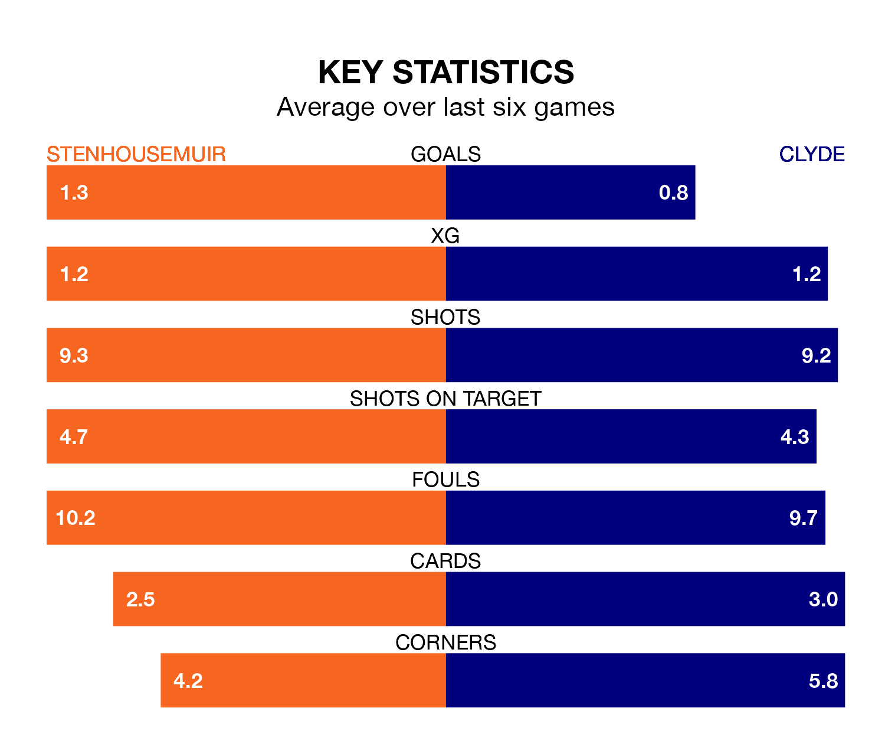

Relegation candidates Clyde face a challenge away against high-flying Stenhousemuir at Ochilview Park on Saturday.
Clyde are rooted to the bottom of the League Two table, and have picked up three wins and nine draws in their 25 games to date.
The Warriors, meanwhile, are top of the standings with 57 points, having won 17 and drawn six.
With 43 goals in 25 games so far this season, Stenhousemuir are the league's highest scorers with 1.7 goals per game. And they are conceding fewer than average, letting in 18 goals at a rate of 0.7 per game.
Clyde, meanwhile, are below average scorers, with 1.1 goals per game, compared to a league average of 1.3. They have conceded 1.8 goals per game.
In Matthew Aitken, the Warriors have the league's most on-form striker so far this season. He has notched 13 goals in 25 appearances.
His goal rate of one every 163 minutes is slightly quicker than that of Martin Rennie, the Bully Wee's top scorer with a goal every 165 minutes, and a total of eight goals in 19 games.
In the last 10 years, Stenhousemuir and Clyde have played each other on six occasions. Stenhousemuir won two of them, Clyde one, and they drew three times.
On average, the Warriors scored 1.8 goals and the Bully Wee 1.3 in those matches.
Their last meeting was on December 30, when Stenhousemuir won 2-1 away.
The hosts are in reasonable form in League Two, with three wins and two draws from their last six games.
With a win and two draws over that period, the away side's form is much worse – they have taken five points from 18, compared to Stenhousemuir's 11.
Stenhousemuir's last match was on February 17, a 2-2 draw against Elgin City, with Euan O'Reilly and Nathaniel Wedderburn getting the goals for the Warriors.
Clyde lost 2-0 against Forfar Athletic last time out, on Tuesday.
Updated: 10:08 (UTC), 23/02/24